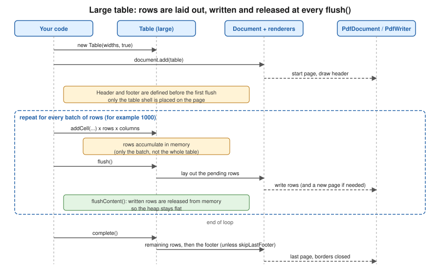

Tables
|
This content was generated with the assistance of AI and should be verified against the official documentation before being relied on in production. |
Tables are the workhorse of business documents: the lines of an invoice, a monthly sales summary, a packing list. In
iText 9 they are the Table and Cell classes of the layout module (com.itextpdf.layout.element), which sit on top of
the same PdfDocument and Document objects described in Document Lifecycle. This page shows how
to size columns, merge cells, repeat headers and footers, control how a table is split across pages, generate tables with
tens or hundreds of thousands of rows without exhausting the heap, and customise cell borders. Versions are stated as of
2026-10-09: iText Core 9.8.0 on Java 21. All the examples below were compiled and run against exactly that version and the
resulting files were checked for page count, repeated headers and footers.
The running scenario is the Bookshelf Billing invoice: a header with the ISBN, title, quantity, unit price and line total, one row per invoice line, and a grand total row. The Spring Boot plumbing that returns the generated bytes to a client is in Getting Started with Spring Boot, and feeding a table from a paged repository is in Generating Reports from Databases & Services.
What changed since the old PdfPTable
Books written for iText 1 and 2 (including the classic 2006 text iText in Action, consulted for the concept order of this
page and not reproduced) build tables with PdfPTable, the older Table and SimpleTable classes, PdfPCell,
ColumnText and MultiColumnText, add document structure with Chapter and Section, and decorate pages with
HeaderFooter. None of those classes exist in iText 7, 8 or 9, which are a rewrite of the library (finding O5 of this
section’s source analysis). The current approach is:
-
a single
com.itextpdf.layout.element.TableandCellpair, added to a layoutDocumentlike any other element; -
columns sized with
UnitValuearrays instead of the old relative-widthfloat[]plussetTotalWidth; -
header and footer rows defined on the table itself (
addHeaderCell,addFooterCell) instead of aheaderRowscount; -
multi-column flows done with the column document renderer, and page headers and footers drawn from event handlers, both covered in the pages on renderers and page events of this section;
-
the old
PdfPTableEventandPdfPCellEventcallbacks replaced by renderers: a table or a cell asks a renderer to draw it, and you provide your own renderer subclass where you need different drawing (see the borders section below).
The licence did not change in spirit but did in letter: iText 7 and later is released under the AGPLv3 or under a
commercial licence, while iText 1 and 2 used the MPL and LGPL. Code ported from the old API therefore has licensing
consequences discussed in the Introduction & Approaches page of this section. The LGPL and MPL fork of the old API,
OpenPDF, keeps PdfPTable, which is why many answers on the web still show it.
Basic tables: Table, Cell and column widths
A Table is created with its column widths, and cells are added left to right, top to bottom; the table starts a new row
automatically when the number of columns is reached. A Cell is a block element (the other block elements are described in Layout Elements): it holds other block elements (usually
Paragraph, but also Image, nested Table or List), and its own properties control background, borders, padding,
alignment and spans. Column widths are UnitValue objects, and UnitValue offers factory methods for the two cases:
-
UnitValue.createPercentArray(float[])takes relative weights that are normalised to percentages:{3, 6, 1.5f, 2, 2}gives five columns whose widths are in the ratio 3 : 6 : 1.5 : 2 : 2 (the weights are normalised so that they add up to 100 %, here 14.5 parts in all).createPercentArray(int n)creates n equal columns. -
UnitValue.createPointArray(float[])takes absolute widths in points (1 point = 1/72 inch), for a fixed-width column such as a 60 point quantity column.
The total width of the table is a separate property. useAllAvailableWidth() (or setWidth(UnitValue.createPercentValue(100))) makes the
table fill the space between the margins, setAutoLayout() lets iText adjust the columns to their content, and setFixedLayout() switches to a fixed-width algorithm that trusts the declared
column widths instead of measuring the content, which is faster for big tables.
The first example builds the invoice lines table with header, footer, colspan, rowspan and right-aligned numbers. It needs two Maven artifacts on the classpath: iText Core as a POM aggregator, and exactly one Bouncy Castle adapter (the adapter is only required for encryption and signing, and is restated here so the coordinates are complete on this page). iText is licensed under the AGPLv3 or under a commercial licence.
<dependency>
<groupId>com.itextpdf</groupId>
<artifactId>itext-core</artifactId>
<version>9.8.0</version>
<type>pom</type>
</dependency>
<dependency>
<groupId>com.itextpdf</groupId>
<artifactId>bouncy-castle-adapter</artifactId>
<version>9.8.0</version>
</dependency>package com.example.billing;
import com.itextpdf.kernel.colors.ColorConstants;
import com.itextpdf.io.font.constants.StandardFonts;
import com.itextpdf.kernel.font.PdfFont;
import com.itextpdf.kernel.font.PdfFontFactory;
import com.itextpdf.kernel.geom.PageSize;
import com.itextpdf.kernel.pdf.PdfDocument;
import com.itextpdf.kernel.pdf.PdfWriter;
import com.itextpdf.layout.Document;
import com.itextpdf.layout.borders.Border;
import com.itextpdf.layout.borders.SolidBorder;
import com.itextpdf.layout.element.Cell;
import com.itextpdf.layout.element.Paragraph;
import com.itextpdf.layout.element.Table;
import com.itextpdf.layout.properties.HorizontalAlignment;
import com.itextpdf.layout.properties.TextAlignment;
import com.itextpdf.layout.properties.UnitValue;
import java.io.IOException;
import java.math.BigDecimal;
import java.math.RoundingMode;
import java.util.ArrayList;
import java.util.List;
public class InvoiceTable {
record Line(String isbn, String title, int quantity, BigDecimal unitPrice) {
BigDecimal total() {
return unitPrice.multiply(BigDecimal.valueOf(quantity));
}
}
public static void main(String[] args) throws IOException {
List<Line> lines = new ArrayList<>();
for (int i = 1; i <= 60; i++) {
lines.add(new Line("978-00000-%04d".formatted(i), "Book number " + i, 1 + i % 3,
new BigDecimal("9.90").add(BigDecimal.valueOf(i))));
}
try (PdfDocument pdf = new PdfDocument(new PdfWriter("invoice-table.pdf"));
Document document = new Document(pdf, PageSize.A4)) {
PdfFont bold = PdfFontFactory.createFont(StandardFonts.HELVETICA_BOLD);
// Relative widths: ISBN 3, title 6, quantity 1.5, unit price 2, total 2
Table table = new Table(UnitValue.createPercentArray(new float[] {3, 6, 1.5f, 2, 2}));
table.useAllAvailableWidth();
table.setMarginTop(12);
// Header cells repeat on every page
for (String h : new String[] {"ISBN", "Title", "Qty", "Unit price", "Total"}) {
table.addHeaderCell(new Cell().add(new Paragraph(h).setFont(bold))
.setBackgroundColor(ColorConstants.LIGHT_GRAY));
}
// The footer is repeated at the bottom of every page, except the last one
table.addFooterCell(new Cell(1, 5).add(new Paragraph("Continued on the next page"))
.setTextAlignment(TextAlignment.RIGHT));
table.setSkipLastFooter(true);
BigDecimal grand = BigDecimal.ZERO;
for (Line l : lines) {
table.addCell(new Cell().add(new Paragraph(l.isbn())));
table.addCell(new Cell().add(new Paragraph(l.title())));
table.addCell(new Cell().add(new Paragraph(String.valueOf(l.quantity())))
.setTextAlignment(TextAlignment.RIGHT));
table.addCell(new Cell().add(new Paragraph(l.unitPrice().toPlainString()))
.setTextAlignment(TextAlignment.RIGHT));
table.addCell(new Cell().add(new Paragraph(l.total().toPlainString()))
.setTextAlignment(TextAlignment.RIGHT).setKeepTogether(true));
grand = grand.add(l.total());
}
// Grand total as an ordinary last row: a colspan of 4 and a single cell
table.addCell(new Cell(1, 4).add(new Paragraph("Total (VAT excluded)").setFont(bold))
.setTextAlignment(TextAlignment.RIGHT));
table.addCell(new Cell().add(new Paragraph(grand.setScale(2, RoundingMode.HALF_UP).toPlainString())
.setFont(bold)).setTextAlignment(TextAlignment.RIGHT));
document.add(new Paragraph("Invoice INV-2026-0042").setFont(bold));
document.add(table);
// A second table: rowspan, colspan, borders
Table summary = new Table(UnitValue.createPercentArray(3)).useAllAvailableWidth()
.setHorizontalAlignment(HorizontalAlignment.CENTER)
.setBorder(new SolidBorder(1));
summary.addCell(new Cell(2, 1).add(new Paragraph("VAT")).setBorder(Border.NO_BORDER));
summary.addCell(new Cell(1, 2).add(new Paragraph("4 % (books)")));
summary.addCell(new Cell().add(new Paragraph("Base")));
summary.addCell(new Cell().add(new Paragraph("Amount")));
document.add(summary);
}
}
}The listing exercises most of the basic properties:
-
new Cell(1, 4)is a cell with a rowspan of 1 and a colspan of 4: the constructor takes(rowspan, colspan)in that order, which is the reverse of the order many people expect.new Cell(2, 1)spans two rows in one column. Spans are resolved by the table when it lays out, so a spanning cell is added once and the cells it covers are skipped. -
Alignment is a property of the cell (
setTextAlignment) or, to align the whole table in its container,setHorizontalAlignmenton the table. -
Money is kept in
BigDecimaland formatted withtoPlainString(); arecordcarries the data of each line. These are ordinary Java 21 idioms and iText has no opinion about them: anyIterableof lines can drive the loop. -
String.formattedgenerates the placeholder ISBNs; the data are invented. -
Cellconstructors never take a string: text is always wrapped in aParagraph, and the font is set on the paragraph (setFont) or inherited from the table, the cell or the document.
The relevant official pages are the KB tutorial Tables, the
Table and
Cell API pages, and the
UnitValue API page; the
example above is derived from them. The tutorials in the KB were written for earlier releases of the 7.x line and some
snippets there use constructors and setters that have been renamed since; where they differ, the compiled code above is the
truth for 9.8.0.
Headers, footers and splitting across pages
When the rows of a table do not fit on a page, the table is split and continues on the next page. Header and footer cells are what make the continuation readable:
-
addHeaderCell(...)adds a cell to the header. A header is repeated at the top of every page the table occupies. -
addFooterCell(...)adds a cell to the footer, repeated at the bottom of every page the table occupies. -
setSkipFirstHeader(true)omits the header on the first page only. Use it when a title or an explicit caption above the table already identifies the columns on the first page, and the header is only wanted on the continuation pages. -
setSkipLastFooter(true)omits the footer on the last page only. This is the usual way to print "continued on the next page" on every page but the last one: a normal footer would otherwise also appear after the final row, where it makes no sense. The grand total of the invoice above is therefore a normal last row, not a footer. A footer that holds a total would be printed on every page, including the ones where it is only a partial total.
The header and the footer are tracked separately from the body, each as its own small Table reachable with getHeader()
and getFooter(), so they can be added at any point before the table is laid out. A header that spans several rows is
created by adding more header cells than there are columns.
The example below shows three variants side by side. It uses setKeepTogether(true) on cells, which is the supported way
to say that a row must never be split in the middle of a cell (a cell whose content does not fit moves, whole, to the next
page), and on the table, which tries to place the whole table on one page and starts it on a new page when it fits there:
package com.example.billing;
import com.itextpdf.kernel.pdf.PdfDocument;
import com.itextpdf.kernel.pdf.PdfWriter;
import com.itextpdf.layout.Document;
import com.itextpdf.layout.borders.SolidBorder;
import com.itextpdf.layout.element.AreaBreak;
import com.itextpdf.layout.element.Cell;
import com.itextpdf.layout.element.Paragraph;
import com.itextpdf.layout.element.Table;
import com.itextpdf.layout.properties.AreaBreakType;
import com.itextpdf.layout.properties.BorderCollapsePropertyValue;
import com.itextpdf.layout.properties.UnitValue;
import java.io.IOException;
public class SplittingTables {
static Table buildTable(int rows) {
Table table = new Table(UnitValue.createPercentArray(new float[] {1, 4})).useAllAvailableWidth();
table.addHeaderCell("Line");
table.addHeaderCell("Title");
for (int i = 1; i <= rows; i++) {
// Each row is atomic: a cell whose content does not fit moves to the next page whole
table.addCell(new Cell().add(new Paragraph(Integer.toString(i))).setKeepTogether(true));
table.addCell(new Cell().add(new Paragraph("Book number " + i)).setKeepTogether(true));
}
return table;
}
public static void main(String[] args) throws IOException {
try (PdfDocument pdf = new PdfDocument(new PdfWriter("splitting.pdf"));
Document document = new Document(pdf)) {
// 1. Repeat the header on every page (default) and extend the last row to the page bottom on a split
Table repeated = buildTable(80).setExtendBottomRowOnSplit(true)
.setBorderCollapse(BorderCollapsePropertyValue.SEPARATE)
.setHorizontalBorderSpacing(2).setVerticalBorderSpacing(2);
document.add(repeated);
document.add(new AreaBreak(AreaBreakType.NEXT_PAGE));
// 2. Skip the header on the first page, because a title above the table already plays that role
document.add(new Paragraph("Invoice lines"));
document.add(buildTable(80).setSkipFirstHeader(true).setBorder(new SolidBorder(1)));
document.add(new AreaBreak(AreaBreakType.NEXT_PAGE));
// 3. Keep the whole table on one page when it fits, else start it on a new page
document.add(buildTable(20).setKeepTogether(true));
}
}
}Notes on the listing:
-
setExtendBottomRowOnSplit(true)extends the last row on a page when the table is split, so that the borders reach the bottom of the available area;setExtendBottomRow(true)is the same setting for the final part of the table. Both are mostly useful with borders, so that the page ends in a closed box. -
A table in
BorderCollapsePropertyValue.SEPARATEmode with horizontal and vertical border spacing draws each cell as its own box. The default,COLLAPSE, merges the borders of neighbouring cells into a single line. -
setKeepTogether(true)is a request, not a guarantee: an element that is taller than a whole page cannot be kept on one page, and the iText documentation describes the property as a best effort for such elements. -
setKeepWithNext(true)on a paragraph or table keeps it on the same page as the element that follows, which is the right way to avoid a heading stranded at the bottom of a page.
The official pages for this section are Splitting tables and the
Table API page.
Large tables
A normal table keeps every cell in memory until the document is closed, and a document with 100,000 rows therefore holds millions of objects on the heap. The large table mode lets the application add rows in batches: each batch is laid out and written to the PDF, and the objects for the written rows are released. The pattern has four steps:
-
Create the table with
new Table(widths, true). The second argument,largeTable, switches the mode on. -
Add the (still empty) table to the document. The header and the footer are fixed at this point; the table is not allowed to change its columns later.
-
Add cells in a loop and call
table.flush()every few thousand rows.flush()lays out the rows added so far, writes them to the page and releases them. -
Call
table.complete()once all rows were added. It lays out the remaining rows, writes the footer, and marks the table complete so that the document knows it is finished.
The same sequence as a standalone figure, with the batch loop framed:

package com.example.billing;
import com.itextpdf.kernel.pdf.PdfDocument;
import com.itextpdf.kernel.pdf.PdfWriter;
import com.itextpdf.layout.Document;
import com.itextpdf.layout.element.Cell;
import com.itextpdf.layout.element.Paragraph;
import com.itextpdf.layout.element.Table;
import com.itextpdf.layout.properties.UnitValue;
import java.io.IOException;
public class LargeInvoiceTable {
public static void main(String[] args) throws IOException {
try (PdfDocument pdf = new PdfDocument(new PdfWriter("large-table.pdf"));
Document document = new Document(pdf)) {
// largeTable = true: rows are not kept in memory once flushed
Table table = new Table(UnitValue.createPercentArray(new float[] {2, 6, 2}), true);
table.useAllAvailableWidth();
table.addHeaderCell(new Cell().add(new Paragraph("Line")));
table.addHeaderCell(new Cell().add(new Paragraph("Title")));
table.addHeaderCell(new Cell().add(new Paragraph("Total")));
table.addFooterCell(new Cell(1, 3).add(new Paragraph("Continued on the next page")));
table.setSkipLastFooter(true);
document.add(table); // the (still empty) table is added first
for (int i = 1; i <= 100_000; i++) {
table.addCell(new Cell().add(new Paragraph(Integer.toString(i))));
table.addCell(new Cell().add(new Paragraph("Book number " + i)));
table.addCell(new Cell().add(new Paragraph("%d.00".formatted(i % 90 + 10))));
if (i % 1000 == 0) {
table.flush(); // lay out and write the rows added so far
}
}
table.complete(); // writes the footer and closes the table
}
}
}The listing generates a table with 100,000 rows. To see the effect, the examples were run with a deliberately small heap
(-Xmx96m): the same 100,000 rows built as a normal table and added in one call failed with
java.lang.OutOfMemoryError: Java heap space, while the large-table version completed and produced a file of about 5.8 MB
and 3,125 pages. The exact numbers depend on the cell content and the machine; the point is that the memory held by the
large table is bounded by the batch size and not by the total number of rows.
Practical rules for large tables:
-
Call
flush()on a batch boundary of a few hundred to a few thousand rows. Flushing more often costs layout overhead, flushing less often costs memory. Always callcomplete()at the end, or the last rows and the footer are not written. -
Rows are laid out when
flush()is called, so the table is not changed afterwards. Do not mutate cells that were already added. Do not add rows from several threads, sinceTableis not thread-safe. -
With
setSkipLastFooter(true)the footer is correctly omitted on the last page: in the run above the "Continued on the next page" footer was present on 3,124 of 3,125 pages. -
The official KB page documents two limitations. Tables with complex content, such as form fields, may be flushed before data structures that refer to them are final. And with PDF/A or PDF/UA documents the flushing of pages is disabled, since the conformance checks need all pages in memory when the document closes, which logs a warning; the large-table mode still helps for speed and garbage-collector pressure, but not as much as for a plain document.
-
The data source should itself be streamed. Reading all 100,000 records into a
Listbefore the loop defeats the point; iterate a database cursor or a paged repository query instead (see the reports-from-data page of this section).
The official page is Large tables, which also links to the sample on GitHub the
example derives from, and the
ILargeElement API page that
Table implements (flush(), complete(), isComplete() and flushContent() all come from that contract).
Cell borders and renderers
Borders are an ordinary property of the table and of each cell. Border is an abstract class with the concrete
implementations SolidBorder, DashedBorder, FixedDashedBorder, DottedBorder, DoubleBorder, GrooveBorder, InsetBorder,
OutsetBorder, RidgeBorder and RoundDotsBorder, plus the constant Border.NO_BORDER. A border is set on the whole cell with
setBorder(Border) or on one side with setBorderTop, setBorderRight, setBorderBottom and setBorderLeft. The summary
table in the first example uses setBorder(new SolidBorder(1)) on the table and setBorder(Border.NO_BORDER) on one cell.
Because the default table border mode is collapse, adjacent cells share a line and the "winning" border is the thicker or
the more specific one; switch to separate mode when each cell should look like its own box.
When the supplied borders and background are not enough, iText 7 and later replaced the old PdfPTableEvent and
PdfPCellEvent callback interfaces by renderers. A renderer is the object that knows how to lay out
and draw an element. Every element creates its default renderer, and setNextRenderer(IRenderer) replaces it with a
subclass of CellRenderer, TableRenderer and so on. The renderer must also override getNextRenderer() so that when
iText splits the element across pages it creates a new instance of your subclass for the continuation:
package com.example.billing;
import com.itextpdf.kernel.colors.ColorConstants;
import com.itextpdf.kernel.pdf.PdfDocument;
import com.itextpdf.kernel.pdf.PdfWriter;
import com.itextpdf.kernel.pdf.canvas.PdfCanvas;
import com.itextpdf.layout.Document;
import com.itextpdf.layout.element.Cell;
import com.itextpdf.layout.element.Paragraph;
import com.itextpdf.layout.element.Table;
import com.itextpdf.layout.layout.LayoutContext;
import com.itextpdf.layout.properties.UnitValue;
import com.itextpdf.layout.renderer.CellRenderer;
import com.itextpdf.layout.renderer.DrawContext;
import com.itextpdf.layout.renderer.IRenderer;
import java.io.IOException;
public class RoundedBorders {
/** Draws a rounded rectangle around the cell instead of the standard border. */
static class RoundedCellRenderer extends CellRenderer {
RoundedCellRenderer(Cell modelElement) {
super(modelElement);
}
@Override
public void drawBorder(DrawContext drawContext) {
PdfCanvas canvas = drawContext.getCanvas();
var box = getOccupiedAreaBBox();
canvas.saveState()
.setStrokeColor(ColorConstants.DARK_GRAY)
.roundRectangle(box.getX() + 1, box.getY() + 1, box.getWidth() - 2, box.getHeight() - 2, 4)
.stroke()
.restoreState();
}
@Override
public IRenderer getNextRenderer() {
return new RoundedCellRenderer((Cell) modelElement);
}
}
public static void main(String[] args) throws IOException {
try (PdfDocument pdf = new PdfDocument(new PdfWriter("rounded.pdf"));
Document document = new Document(pdf)) {
Table table = new Table(UnitValue.createPercentArray(2)).useAllAvailableWidth();
for (String s : new String[] {"Customer", "Jane Doe", "Order", "ORD-1"}) {
Cell c = new Cell().add(new Paragraph(s));
c.setNextRenderer(new RoundedCellRenderer(c));
table.addCell(c);
}
document.add(table);
}
}
}The example draws the cell background and text with the standard code and replaces only the border drawing by overriding
drawBorder(DrawContext). The PdfCanvas of the draw context is the low-level canvas of the page, and
getOccupiedAreaBBox() returns the rectangle the cell occupies, so any vector shape can be drawn around it. For effects
that sit behind or in front of the content, override drawBackground or draw instead.
The renderer classes of the layout module are documented in the
CellRenderer and
TableRenderer API pages and the
KB tutorial Table and cell events to draw borders,
which describes the original task for PdfPTableEvent-based code. The tutorial’s code is for earlier 7.x releases, and
the version above was compiled for 9.8.0. A deeper treatment of renderers, including how to subclass a TableRenderer
to change row layout, belongs to the page on renderers and custom layout of this section.
Choosing between the options
| Need | Use | Because |
|---|---|---|
A normal invoice or report table |
|
Simple, laid out with the automatic algorithm |
Tens of thousands of rows or more |
|
Memory is bounded by the batch size; see the large tables section |
Same header on every page, title only on the first |
|
Header repeats only on continuation pages |
"Continued" marker on all pages but the last |
|
The footer is not printed after the last row |
A row or table that must not be split |
|
Moves whole to the next page |
Rounded corners, shading, custom frames |
|
Replaces the old table and cell events |
References
-
iText Knowledge Base, Tables: https://kb.itextpdf.com/itext/tables
-
iText Knowledge Base, Splitting tables: https://kb.itextpdf.com/itext/splitting-tables
-
iText Knowledge Base, Large tables: https://kb.itextpdf.com/itext/large-tables
-
iText Knowledge Base, Table and cell events to draw borders: https://kb.itextpdf.com/itext/table-and-cell-events-to-draw-borders
-
iText 9.8.0 API,
Table: https://api.itextpdf.com/iText/java/latest/com/itextpdf/layout/element/Table.html -
iText 9.8.0 API,
Cell: https://api.itextpdf.com/iText/java/latest/com/itextpdf/layout/element/Cell.html -
iText 9.8.0 API,
UnitValue: https://api.itextpdf.com/iText/java/latest/com/itextpdf/layout/properties/UnitValue.html -
iText 9.8.0 API,
ILargeElement: https://api.itextpdf.com/iText/java/latest/com/itextpdf/layout/element/ILargeElement.html -
iText 9.8.0 API,
Border: https://api.itextpdf.com/iText/java/latest/com/itextpdf/layout/borders/Border.html -
iText 9.8.0 API,
CellRenderer: https://api.itextpdf.com/iText/java/latest/com/itextpdf/layout/renderer/CellRenderer.html -
iText 9.8.0 API,
TableRenderer: https://api.itextpdf.com/iText/java/latest/com/itextpdf/layout/renderer/TableRenderer.html -
iText licensing, AGPLv3 versus commercial: https://kb.itextpdf.com/itext/what-is-the-difference-between-agpl-and-commercial
-
iText Core on Maven Central: https://central.sonatype.com/artifact/com.itextpdf/itext-core